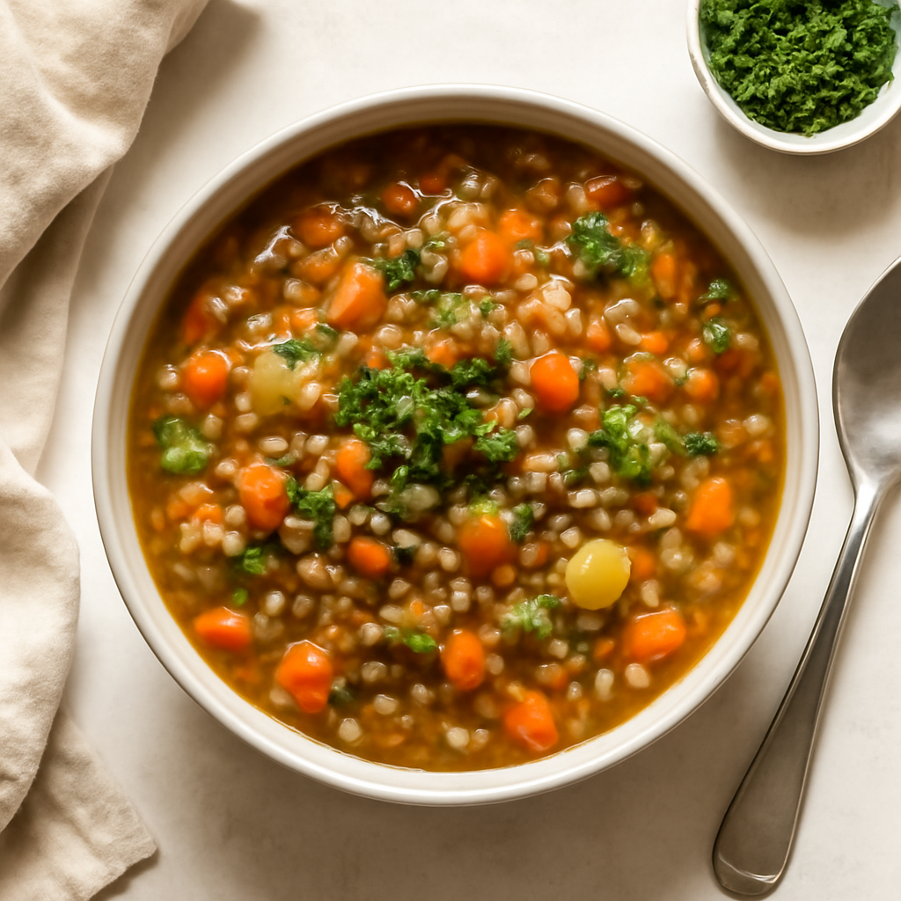

Thursday — Vegetable Lentil Soup

Cook Time: 40 minutes
Method: Pressure Cooker
vegansouppressure cooker
Ingredients for 6
- 1 cup dried lentils, rinsed
- 3 carrots, diced
- 2 celery stalks, diced
- 1 onion, diced
- 3 cloves garlic, minced
- 4 cups vegetable broth
- 1 can diced tomatoes
- 1 teaspoon thyme
- Salt, to taste
- Pepper, to taste
- 2 tablespoons olive oil
Instructions
- Heat olive oil in the pressure cooker, sauté onion, garlic, carrots, and celery until soft.
- Add lentils, diced tomatoes, thyme, salt, pepper, and broth.
- Seal and cook on high pressure for 15 minutes; let release naturally.
Toddler Notes
- Blend soup slightly to make it smoother for toddlers and ensure no large chunks are present.
← Back to weekly plan